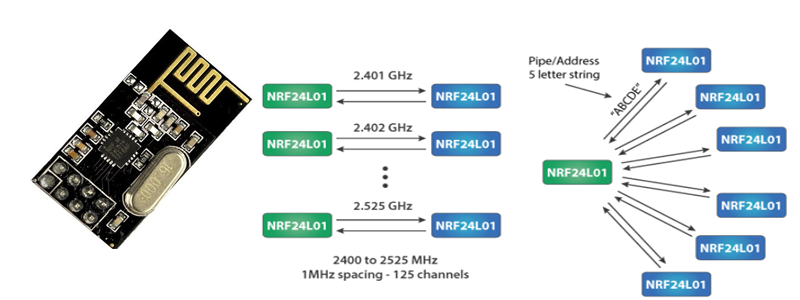

Overview
NRF24L01 transceiver module. It uses the 2.4 GHz band and it can operate with baud rates from 250 kbps up to 2 Mbps. The power consumption of this module is just around 12mA during transmission, which is even lower than a single LED. The operating voltage of the module is from 1.9 to 3.6V, but the good thing is that the other pins tolerate 5V logic, so we can easily connect it to an Arduino without using any logic level converters. the nRF24L01 provides a true ULP solution enabling months to years of battery lifetime when running on coin cells or AA/AAA batteries .
The module can use 125 different channels which gives a possibility to have a network of 125 independently working modems in one place. Each channel can have up to 6 addresses, or each unit can communicate with up to 6 other units at the same time.
First we need to download and install the RF24 library From here. You can install the library in Arduino IDE using Sketch-> Import library-> Add library.
Transmitter code
#include <SPI.h>
#include <nRF24L01.h>
#include <RF24.h>
RF24 radio(7, 8); // CNS, CE
const byte address[6] = "00001";
void setup() {
radio.begin();
radio.openWritingPipe(address);
radio.setPALevel(RF24_PA_MIN);
radio.stopListening();
}
void loop() {
const char text[] = "Hello World";
radio.write(&text, sizeof(text));
delay(1000);
}
Receiver Code
#include <SPI.h>
#include <nRF24L01.h>
#include <RF24.h>
RF24 radio(7, 8); // CNS, CE
const byte address[6] = "00001";
void setup() {
Serial.begin(9600);
radio.begin();
radio.openReadingPipe(0, address);
radio.setPALevel(RF24_PA_MIN);
radio.startListening();
}
void loop() {
if (radio.available()) {
char text[32] = "";
radio.read(&text, sizeof(text));
Serial.println(text);
}
}
Program Description:
So we need to include the basic SPI and the newly installed RF24 libraries and create an RF24 object. The two arguments here are the CSN and CE pins.
RF24 radio(7, 8); // CE, CSN
Next we need to create a byte array which will represent the address, through which the two modules will communicate.
const byte address[6] = "00001";
We can change the value of this address to any 5 letter string and this enables to choose to which receiver we will talk, so in our case we will have the same address at both the receiver and the transmitter. In the setup section we need to initialize the radio object and using the radio.openWritingPipe() function we set the address of the receiver to which we will send data, the 5 letter string we previously set.
radio.openWritingPipe(address);
On the other side, at the receiver, using the radio.setReadingPipe() function we set the same address and in that way we enable the communication between the two modules.
radio.openReadingPipe(0, address);
Then using the radio.setPALevel() function we set the Power Amplifier level, in our case I will set it to minimum as my modules are very close to each other.
radio.setPALevel(RF24_PA_MIN);
Note that if using a higher level it is recommended to use a bypass capacitors across GND and 3.3V of the modules so that they have more stable voltage while operating. Next we have the radio.stopListening() function which sets module as transmitter, and on the other side, we have the radio.startListening() function which sets the module as receiver.
radio.stopListening(); // at the Transmitter radio.startListening(); // at the Receiver
In the loop section, at the transmitter, we create an array of characters to which we assign the message “Hello World”. Using the radio.write() function we will send that message to the receiver. The first argument here is the variable that we want to be sent.
void loop() {
const char text[] = "Hello World";
radio.write(&text, sizeof(text));
delay(1000);
}
By using the “&” before the variable name we actually set an indicating of the variable that stores the data that we want to be sent and using the second argument we set the number of bytes that we want to take from that variable. In this case the sizeof() function gets all bytes of the strings “text”. At the end of the program we will add 1 second delay. On the other side, at the receiver, in the loop section using the radio.available() function we check whether there is data to be received. If that’s true, first we create an array of 32 elements, called “text”, in which we will save the incoming data.
void loop() {
if (radio.available()) {
char text[32] = "";
radio.read(&text, sizeof(text));
Serial.println(text);
}
}
Using the radio.read() function we read and store the data into the “text” variable. At the end we just print text on the serial monitor. So once we upload both programs, we can run the serial monitor at the receiver and we will notice the message “Hello World” gets printed each second.